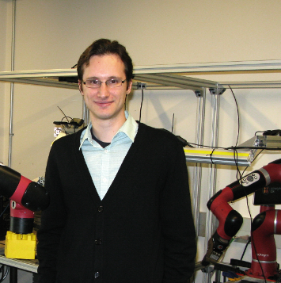

Next generation of robots should combine ideas from other fields such as computer vision, natural language processing, machine learning and many others, because the close-loop system is required to deal with complex tasks based on multimodal input in the complicated real environment. This workshop focuses on generative models for robot learning, which lies in the important and fundamental field of AI and robotics.
Our topics include but are not limited to:
- Robotics data generation. (i) How can we build simulators with diverse assets with rich interactive properties? And how can we accurately simulate physical consequences for diverse actions of robots? (ii) How can we accelerate the generation process for successful trajectory in the simulation environments? (iii) What are the challenges and possible solutions to alleviate the visual domain gap between the simulators and the real world?
- Generative policy learning. (i) How can we design a generative visual representation learning framework that effectively embeds spatiotemporal information of the scene via self-supervision? (ii) How can we efficiently construct world model for scalable robot learning, and what information of the scene and the robot should be considered in order to acquire accurate feedback from the world model? (iii) How can we extend state-of-the-art generative models such as diffusion models in computer vision and auto-regressive models in natural language processing for policy generation?
- Foundation model grounding. (i) What are the general criteria for designing prompts of LLMs for robot tasks? (ii) How can we build a scalable, efficient and generalizable representation of physical scenes to ground the action prediction of VLMs? (iii) How can we enhance the sample efficiency in VLA model training, and how can we efficiently adapt pre-trained VLA models to novel robot tasks?
- On-device generative model deployment. (i) What is the complexity bottleneck in current pre-trained large generative models, and how can we distinguish and remove the redundant architectures? (ii) How can we dynamically keep the optimal accuracy-efficiency trade-off to adapt to the changing resource limit caused by battery level and utilization variance? (iii) How can we develop the compilation toolbox for pre-trained large generative models on robot-based computational platforms to achieve significant actual speedup and memory saving?
Keynote Speakers

Sergey Levine
UC Berkeley
UC Berkeley

Shuran Song
Stanford
Stanford

Yilun Du
Harvard
Harvard
Qi Dou
CUHK
CUHK

Xiaojuan Qi
HKU
HKU
Daquan Zhou
Peking University
Peking University
Schedule
| Opening Remarks and Welcome | 09:00-09:05 |
| Invited Talk: Xiaojuan Qi | 09:05-09:45 |
| Invited Talk: Sergey Levine | 09:45-10:25 |
| Coffee Break | 10:25-10:40 |
| Invited Talk: Shuran Song | 10:40-11:20 |
| Oral Session
[11:20-11:30]
Policy Agnostic RL: Offline RL and Online RL Fine-Tuning of Any Class and Backbone
[11:30-11:40]
Latent Action Pretraining from Videos
[11:40-11:50]
TraceVLA: Visual Trace Prompting Enhances Spatial-Temporal Awareness for Generalist Robotic Policies
|
11:20-11:50 |
| Lunch Break | 11:50-12:20 |
| Poster Session | 12:20-13:20 |
| Invited Talk: Daquan Zhou | 13:20-14:00 |
| Invited Talk: Yilun Du | 14:00-14:40 |
| Invited Talk: Qi Dou | 14:40-15:20 |
| Closing Remarks | 15:20-15:25 |
Accepted Papers
| AVID: Adapting Video Diffusion Models to World Models | |
| Bidirectional Decoding: Improving Action Chunking via Closed-Loop Resampling | |
| Contrastive Initial State Buffer for Reinforcement Learning | |
| DemoGen: Synthetic Demonstration Generation for Data-Efficient Visuomotor Policy Learning | |
| DexTrack: Towards Generalizable Neural Tracking Control for Dexterous Manipulation from Human References | |
| Diffusion Model Predictive Control | |
| Environment as Policy: Generative Curriculum for Autonomous Racing | |
| EQM-MPD Equivariant On-Manifold Motion Planning Diffusion | |
| ET-Plan-Bench: Embodied Task-level Planning Benchmark Towards Spatial-Temporal Cognition with Foundation Models | |
| FP3: A 3D Foundation Policy for Robotic Manipulation | |
| Generative Quality Diversity Imitation Learning for Robot Skill Acquisition | |
| (Oral) Latent Action Pretraining from Videos | |
| Learning from Massive Human Videos for Universal Humanoid Pose Control | |
| Learning Novel Skills from Language-Generated Demonstrations | |
| Modality-Composable Diffusion Policy via Inference-Time Distribution-level Composition | |
| Offline Learning of Controllable Diverse Behaviors | |
| Overcoming Slow Decision Frequencies in Continuous Control: Model-Based Sequence Reinforcement Learning for Model-Free Control | |
| PEAR: Primitive Enabled Adaptive Relabeling for Boosting Hierarchical Reinforcement Learning | |
| (Oral) Policy Agnostic RL: Offline RL and Online RL Fine-Tuning of Any Class and Backbone | |
| Responsive Noise-Relaying Diffusion Policy: Responsive and Efficient Visuomotor Control | |
| RL Zero: Zero-Shot Language to Behaviors Without Any Supervision | |
| SAM2Act: Integrating Visual Foundation Model with A Memory Architecture for Robotic Manipulation | |
| Sampling from Energy-based Policies using Diffusion | |
| Solving New Tasks by Adapting Internet Video Knowledge | |
| Stem-OB: Generalizable Visual Imitation Learning with Stem-Like Convergent Observation through Diffusion Inversion | |
| (Oral) TraceVLA: Visual Trace Prompting Enhances Spatial-Temporal Awareness for Generalist Robotic Policies | |
| VLABench: A Large-Scale Benchmark for Language-Conditioned Robotics Manipulation with Long-Horizon Reasoning Tasks |
Organizers

Ziwei Wang
NTU
NTU

Congyue Deng
Stanford
Stanford
Changliu Liu
CMU
CMU
Zhenyu Jiang
UT Austin
UT Austin

Haoran Geng
UC Berkeley
UC Berkeley
Huazhe Xu
Tsinghua
Tsinghua

Yansong Tang
Tsinghua
Tsinghua

Philip H. S. Torr
Oxford
Oxford

Ziwei Liu
NTU
NTU

Angelique Taylor
Cornell Tech
Cornell Tech
Yuke Zhu
UT Austin
UT Austin

Jitendra Malik
UC Berkeley
UC Berkeley